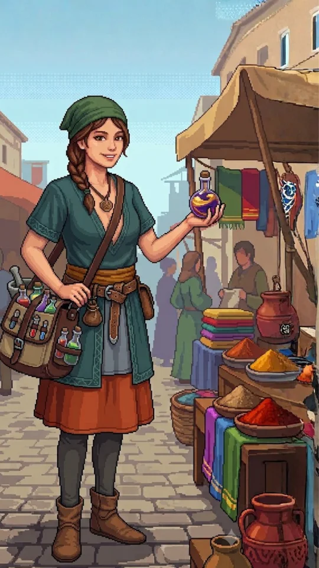

🎒 กระเป๋า
// อุปกรณ์ //
// คราฟต์ — DUST: 0 //
🏠 ฐานของคุณ
// ทีมออกรบ (สูงสุด 3) //
// ตัวสำรอง (สูงสุด 2) //
// คลัง VIRUZ — แตะเพื่อดูสถานะ //
// ป้องกันฐาน //
พลังป้องกันรวม 0
🧬 Character
// ทีมออกรบ (สูงสุด 3) //
// ตัวสำรอง (สูงสุด 2) //
// คลัง VIRUZ — แตะเพื่อดูสถานะ //
🛒 Shop
// 🛡️ AntiviruZ Security Package //
// 🧪 Tech Lab — วิวัฒน์ขั้นสุดท้าย //
เลือก VIRUZ ที่พร้อม (Lv สูงสุด + เพื่อนแท้) แล้วใส่ Malware Core 1 ชิ้น + Code Part 3 ชิ้นเพื่อวิวัฒน์
🍱 Food Shop
// วัตถุดิบทำอาหารโฮมเมด //
🥩 เนื้อไวรัสซื้อที่นี่ไม่ได้ — ต้องล่าสัตว์ประหลาดเท่านั้น
ทำอาหารโฮมเมดได้ที่ 🏠 ฐานของคุณ
แตะจุดสีแดงเพื่อเข้าสู้ · จุดสีเขียวคือที่พักปลอดภัย
💗 ดูแล VIRUZ
เล่นกับเพื่อนเพื่อเพิ่มความผูกพัน
—

สวัสดี ให้ข้าช่วยอะไรได้บ้าง?
// ร้านยา — ใช้ได้ระหว่างต่อสู้ //
ROBCO TERMLINK — —
PASSWORD REQUIRED
ATTEMPTS:
ACCESS GRANTED — —
เลือกสิ่งที่จะขโมย — ยิ่งมีค่า ยิ่งเสี่ยง:
—
ความเร็ว
🛰️ บุกฐานผู้เล่นอื่น
พลังทีมคุณ 0